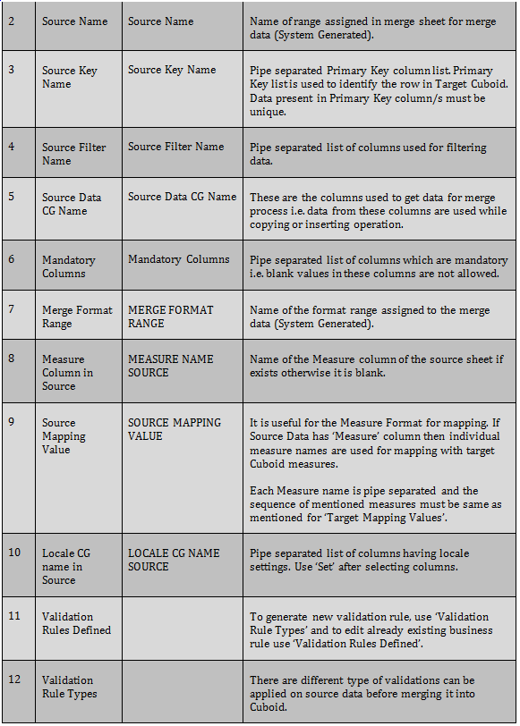
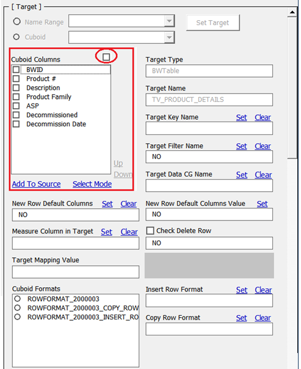
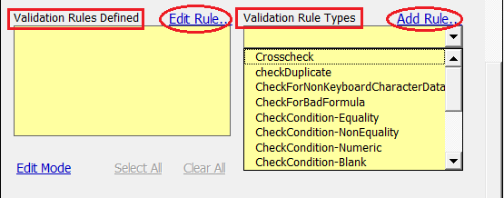
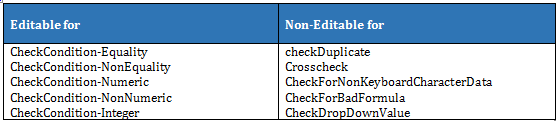
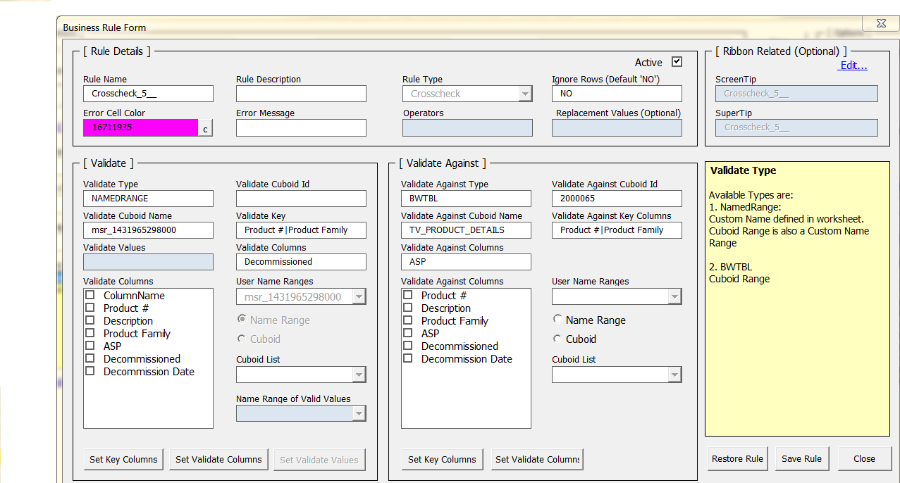

09. User Manual : Excel Merge for Boardwalk Universal Template Version 3.4
-
-
1. Introduction
Boardwalk Excel Merge is used to merge the data from Source Excel Range to Target Excel Range.
‘Merge Sheet’ is the Excel worksheet used to enter the data required to merge and will act as the Source Sheet.
‘Merge Rule Form’ is the functionality to generate a Merge Rule which is having all the configuration information of that rule. Executing this Merge Rule will merge the Source data into the Target Cuboid.
To define the merge rule for particular target Cuboid, open the worksheet having respective target Cuboid and then follow the steps given below to create merge rule.
To define merge rule, go to Universal Template > Configure Data Merge > Excel Merge > Add New Merge Rule.

This generates a merge rule in worksheet ‘Merge_Rule’ and after generating rule confirms the addition with message as shown below.
Click on ‘OK’ will add a new worksheet with name ‘Merge Sheet’ in template as shown below.
Click on ‘OK’ will open the merge rule settings form as shown below
The Merge Rule is created for the target Cuboid with the source sheet as the newly created Merge Sheet.
-
-
2. Merge Rule Form Sections
The Merge Rule form basically contains 6 Sections as
• Rule Details
• Source
• Target
• Options
• Apply Colors
• Information Box
-
2.1 Rule Details Section
This section has information about the Merge Rule.
Each item of the Rule Details section is explained here
Save : Button to save the Merge Rule.
Cancel: Button to cancel the rule and close form without saving the Merge Rule.
Dock Here: This will reduce the form size, with only Rule Details section. Using ‘Full View’ entire form view can be obtained.
-
2.2 Source Section
It is used to set the information related to Source data in to Merge Rule. It has various fields to set the rule.
Each item of the Source section is explained here

-
2.3 Target Section
This section has fields related to Target Cuboid and properties related to target Cuboid can be set using this section. There are various fields are required to set.

Field wise information is provided below.
-
2.4 Options
There are seven options which are part of merge process. User can select either or all options.

-
2.5 Apply Colors
Apply Colors can be used to set color for updated cells or newly inserted rows.

-
2.6 Information Box
This box shows information about selected part of form. As following image shows that on selecting ‘Ignore Rows’ it indicates information related to that box.
-
-
3. Merge Rule Configuration Steps
Below are the sequential steps need to be performed to configure the Merge Rule.
-
3.1 Setting Source Field Parameters
There are two ways to get Source Columns in ‘NameRange Columns’ list box of source section in ‘Merge Rule Settings Form’.
Case1: Using ‘Add To Source’ Label (If the Source column names are same as Target Cuboid column names)
Select the required columns from target Cuboid which are used as source data header columns in worksheet ‘Merge sheet’.
Click on ‘Add To Source’ will add target Cuboid columns into ‘NameRange Columns’ list box and also in worksheet ‘Merge sheet’.
Remove column ‘ColumnName’ from source using ‘Select Mode’ and then select radio button for ‘ColumnName’ and click on ‘Remove’.
Click on ‘Arrange Mode’ to switch to ‘Select Mode’
Case2: Creating Merge Data in ‘Merge Sheet’ Worksheet (If the Source column names are different than Target Cuboid column names).
Capture the newly generated rule name in above form and close the ‘Merge Rule Settings Form’ using ‘Cancel’.
Go to the associated ‘Merge Sheet’ sheet.
Create the Source data in ‘Merge Sheet’ in cell “A8” where value ‘ColumnName’ is present as shown below.

Select entire source data including header rows and click on ‘Resize Range’ to assign system generated range name to merge data present in worksheet ‘Merge Sheet’.
Note: There can be 2 different formats created for Source data (Row or Measure).
Row Format is defined using header and first row as shown below.
Measure format is created with header and different measures from ‘Measure’ column.
Click on ‘Display Rule’ will show the list of merge rules defined. Select proper rule from the list.
This will open the merge rule form as shown below.
Columns from Source Merge Sheet will be available in ‘NameRange Columns’ part of ‘Merge Rule Settings Form’ in ‘Source’ section as shown below.
Once the Source columns are available in ‘NameRange Columns’, form fields like Source Name, Source Data CG Columns etc. can be set as explained below.
NameRange Columns
This box contains list of columns present in the ‘Merge Sheet’ acting as source columns. Selecting check box in front of ‘NameRange Columns’ will select all columns.
Each column is associated with the check box to select the column for setting Source Key Columns or Source Data CG Columns or Source Filter Name Columns etc.
• Select Mode: In this columns are visible with check boxes and altering sequence of columns not allowed.
• Arrange Mode: In this columns are with radio buttons. Remove and altering column sequence is allowed in this mode.
• Remove: It is used to delete column by selecting appropriate radio button.
• Up Down: This is used for altering the sequence of columns.
Source Key Name
Select columns to be set as key columns from ‘NameRange Columns’ and click on ‘Set’ as shown below. ‘Clear’ is used to remove column from ‘Source Key Name’ text box.
Note: To use Merge functionality with Measure Format, specify ‘Measure’ column as ‘Source Key Column’. The Source data must contain rows equal to number of measures or number of rows which is multiple of measure count i.e. for example if there are total 7 measures then source data must contain 7 rows with individual measure in each row or row number in multiple of 7 (7,14,21…).
Source Filter Name
Follow the same steps shown above for ‘Source Key Name’ to set ‘Source Filter Name’ columns.
Source Data CG Name
Follow the same steps shown above for ‘Source Key Name’ to set ‘Source Data CG Name’ columns.
Merge Format Range
It is system generated field. If format is created for merge data in worksheet ‘Merge Sheet’ then system generated name of that format is populated in this field.
Measure Column in Source
Select the source column containing measures and click on ‘set’ to set as ‘Measure Column in Source’. ‘Clear’ is used to remove column from ‘Measure Column In Source’ text box.
Source Mapping Value
It is used for Measure Format. It is used for Measure mapping between Source data Measures and Target Cuboid Measure. Specify names of measures used for mapping. Each measure is pipe ‘|’ separated. For example [Supply|Demand|Missed Supply|%Fulfilled].
-
3.2 Setting Target Fields Parameters
Once Source fields are set as per the business requirement, set the Target fields as per the below instructions.
Target Type
It is system generated field. Type can be ‘BWTable’ or ‘NamedRange’.
Target Name
It is a system generated field. Name of cuboid or MS-Excel named range.
Target Key Name
Select columns to be set as key columns from ‘Cuboid Columns’ and click on ‘Set’ as shown below in ‘Select Mode’.
‘Clear’ is used to remove column from ‘Target Key Name’ text box.
Note: To use Merge functionality with Measure format; specify ‘Measure’ column as ‘Target Key Column’.
Target Filter Name
Follow the same steps shown above for ‘Target Key Name’ to set ‘Target Filter Name’ columns.
Target Data CG Name
Follow the same steps shown above for ‘Target Key Name’ to set ‘Target data CG Name’ columns.
Measure Column in Target
Follow the same steps shown above for ‘Target Key Name’ to set ‘Measure Column in Target’ columns. (Useful for Measure Format; Current version not supports this functionality).
New Row Default Columns
Follow the same steps shown above for ‘Target Key Name’ to set ‘New Row Default Columns’ columns.
New Row Default Column Values
Default values can be set for default columns.
Click on ‘Set’ opens form shown below. Enter values in form with the same order as default columns are specified. Values for multiple columns can be set using pipe separator
Click on ‘OK’ will set values in textbox ‘New Row Default Columns Value’ as

Check Delete Row
It is used to delete row from target data. Select or deselect check box to activate or deactivate delete row operation. The different status combinations are given in table below.
Target Mapping Value
It is useful Measure Format for mapping individual measures. All measures used for mapping are pipe separated ‘|’. For example mention measure names as (Supply|%Fulfilled|Demand)
Cuboid Formats
Lists the various cuboid formats applied to specific target cuboid and displayed in list box with radio button. Select either format from the list.
Insert Row/Measure Format or Copy Row/Measure Format can be selected from the Cuboid Format list.
Insert Row Format
Select format from cuboid format used for inserting new rows. Use ‘Set’ to set the format. ‘Clear’ will remove value from box.
Copy Row Format
Select format from cuboid format used for copying rows. Use ‘Set’ to set the format. ‘Clear’ will remove value from box.
-
3.3 Setting Option for Merge Operation
Select appropriate option as per requirement as shown below from Options section.
Each option is described below for the information and with its significance.
Apply Update Comment
If ‘Checked’ it applies comments informing about cell value change on the modified cells of target Cuboid as shown below. If ‘Unchecked’ no comments are displayed.
The table below shows this option setting field in ‘Merge_Rule’ worksheet.
Insert Row
If ‘Checked’ it adds new row in to the target Cuboid. If ‘Unchecked’ the new rows are not inserted into target Cuboid.
New merged rows are without ‘BWID’. ‘BWID’ will get assigned after Submit.
Table below shows the effect of this option and value set in worksheet ‘Merge_Rule’.
Copy Value
If ‘Checked’ it copies values from source sheet (i.e. Merge Sheet) to target Cuboid for existing rows. If it is ‘Unchecked’ then values are not copied into Cuboid.
Table below shows the effect of this option and value set in worksheet ‘Merge_Rule’.

Copy Formula
If ‘Checked’ it copies formula from source range to target Cuboid. If it is ‘Unchecked’ then no formulas will get copied in to target Cuboid.
It is applicable only for the newly inserted rows.
Table below shows the effect of this option and value set in worksheet ‘Merge_Rule’.
Ignore Blank Source Values
If ‘Checked’ and any blank values present in source sheet then it will ignore those values and will not update blank values into target Cuboid. Data present in target Cuboid will remain as it is for respective blank values in source range. If it is ‘Unchecked’ it will update blank values into target Cuboid.
Table below shows the effect of this option and value set in worksheet ‘Merge_Rule’.
Ignore Case: Under Development Not in use for current version.
Copy Duplicate: Under Development Not in use for current version.
-
3.4 Setting Color for highlighting Merge Cells or Rows
Apply Colors can be used to set color for updated cells or newly inserted rows.
Clicking on ‘Updated Cell Color’ or ‘New Row Color’ will open color picker as shown below.
Any color can be selected by using the particular radio button and adjusting the shade (numbers between 0 to 255) using scroll bar and then clicking on ‘Pick’ will set respective color.
These color properties are applied to the cells updated or inserted on new rows in the target Cuboid range so that user gets information about cell changes or new rows addition with respective highlighted colors.
-
3.5 Saving Merge Rule
Once all required fields are set for defining Merge Rule in the ‘Merge Rule Settings Form’, Click on ‘Save’ will save the merge rule and ‘Cancel’ will close the form without saving rule.
-
3.6 Setting Source data in worksheet 'Merge Sheet'
Note: This step is not necessary and can be performed depending upon the requirement.
Create merge data in merge sheet as shown below.
Select entire data and click on ‘Resize Range’ it will confirm the range size with message.
On successful setting of the range it will give appropriate message shown below.
It will automatically allocate system generated range name to the entire merge data.
-
3.7 Executing the Merge Rule
To execute the Merge rule go to merge sheet and there will be a button named as ‘Run Rule’.
Click on ‘Run Rule’ will open the list of existing rules, select appropriate rule from the list will execute required merge rule.
On successful execution of rule, the data from source merge sheet will be merged into the target Cuboid.
-
-
4. Merge Sheet Functionalities
There are various functionalities present on worksheet ‘Merge Sheet’ which is explained below. These are used to work with Source data added in the ‘Merge Sheet’. These functionalities are as described below in short.
-
4.1 Formatting Related Functionalities
There are three buttons provided for these operations as:
• Generate Format
• Navigate Format
• Apply Format
Generate Format
It is used to generate merge format for the merge data available in the worksheet.
Apply some format for merge data and Click on this button will generate format in worksheet named as ‘Merge Format’ and gives message as below.
The name for the format is system generated and is present in worksheet ‘Merge Format’.
Navigate Format
This is used to navigate to worksheet ‘Merge Format’ where the generated formats are stored after clicking ‘Generate Format’.
Navigating to respective worksheet will reconfirm the generated format.
Apply Format
This is used for applying the merge format to the newly added data. It will apply format which was generated by using ‘Generate Format’.
-
4.2 Range Related Functionalities
There are two buttons provided for these operations as:
• Resize Range
• Validate Range
Resize Range
It is important function in merge operation as it assigns system generated name to the merge data.
It will update the named range on addition or deletion of rows from the merge data.
First time when merge data is prepared and click on ‘Resize Range’ this will give message as below.
On confirmation it gives message as below and assigns system generated name to the merge data range.
On addition or deletion of rows ‘Resize Range’ will update the range with new rows as
Validate Range
This is useful to execute ‘Business Rule’ defined for merge data. Merge Rule form has facility to define validation rules on merge data before merging data in to target cuboid. Validation rule can be set using merge rule form (Please refer Validation Rule settings for details about validation rule).
-
4.3 Row Related Functionalities
There are two buttons provided for these operations as:
• Add Row
• Delete Row
Add Row
It is used to add new blank single row.
Delete Row
It is used to delete row from merge data. Select the row or cell from a row need to be deleted and click on ‘Delete Row’. Single row deletion is allowed with this functionality.
-
4.4 Merge Rule Related Functionalities
There are six buttons provided for these operations as:
• Copy Rule
• Delete Rule
• Display Rule
• Run Rule
• Sort Errors
• Clear Merge Area
Copy Rule
It is used to copy already existing merge rule so that new rule can be created by altering previously created merge rule.
Click on ‘Copy Rule’ will open the list of already generated merge rule, select required rule from the list to copy.
On selecting rule it will confirm with below message
After confirmation message for successful addition of rule will get displayed as
Also message for display rule will get followed by this as
Delete Rule
It is used to delete merge rule.
Click on ‘Delete Rule’ will open the existing rule and select appropriate rule which is required to delete.

On selecting specific rule it will first ask for confirmation about deletion as
On Successful deletion gives confirmation message as
Display Rule
It is used to display existing merge rule by selecting from the list. It opens the merge rule form to view the details of the rule with various sections.
Selected Rule can be modified using Merge Rule Form and saved the changes made using ‘Save’ button available on the form.
Run Rule
It is used to execute merge rule.
Click on this will open the list of existing merge rule. Select appropriate rule to execute. It performs validation check before executing the merge rule for defined business rule and then executes merge operation.
Sort Errors
It is used to get the error cells in sequence i.e. the cells which are violating business rules are described sequentially on the basis of column names and values.
Click on ‘Sort Errors’ opens form ‘SORT’ as
Selecting specific columns will sort merge data on the basis of selected columns.
Clear Merge Area
It is used to remove merge data from worksheet.
-
-
5. Validation Rules
Validation Rules are used to validate the source data available in the merge sheet before the data is merged to the destination.
There are 2 items in the Source Section of the Excel Merge Form to work with the Validation Rules as shown below.
• Validation Rules Defined
• Validation Rule Types
To apply the validations, Select required Validation Rule Type from the list.
Note: Single validation rule type can be selected at a time.

Click on ‘Add Rule’ which generates Business Rule of selected validation type.
It gives message as below.
Click on ‘Ok’ will open the Business Rule form.
This form is used to set business rule (validation rule).
Type wise description of all the Validation Rules are given below
To set the validation rule, Business Rule Form should be configured as per the business requirement.
The Business Rule Form has following sections as
• Rule Details
• Validate
• Validate Against
• Ribbon Related (optional)
• Information Box
The field values of these sections are used to set ‘Business Rule’.
The worksheet ‘BusinessValidationRules’ stores all generated business rules in Excel named range ‘business_validation_rules’.
-
5.1 Rule Details
Business Rule related information can be set like Rule Name, Rule description, color for invalid cells etc.
‘Active’ check box is used to activate or deactivate specific rule.
The Business Rule Form fields used to populate rule details and the corresponding columns of Business Rules which are populated from Business Rule form fields.
The following table gives field wise description.
Follow the below instructions to configure each option
Rule Name
Enter appropriate name.
It is editable field and system generated rule name can be edited with appropriate business rule name.
Rule Description
Enter proper description of the rule to get in short information about the rule functioning.
Ignore Rows (Default ‘No’)
Default ‘No’ to validate all rows else put condition to ignore validation of rows.
Ex: If (|Status|=”Approved”,0,1) It will ignore all rows with column name ‘Status’ with values “Approved”. Column is mentioned in pipe ‘|’.
Error Cell Color
Select appropriate combination of color from color picker by clicking on ‘C’.
Color can be selected by using the particular radio button and adjusting the shade (numbers between 0 to 255) using scroll bar and then clicking on ‘Pick’ will set respective color.

This color is applied to the Invalid cells and user get information about invalid cells with highlighted colors.
Error Message
User editable field. Enter appropriate message to indicate reason for invalidation.
Replacement Values (Optional)
It is editable or non-editable depends upon the type of validation rule.

Active
It is check box. Select check box to activate current business rule and deselect to deactivate business rule.
-
5.2 Validate
It is used specially to set validate columns i.e. columns used for validation for selected validation rule type.
Table below describes the fields of ‘Validate’ Section and corresponding columns in ‘Business Rule’.

Follow the below instructions to configure each option
Set Validate Columns
Select the column from the ‘Validate Columns’ list and click on ‘Set Validate Columns’.
It will set the column and add entry in ‘Validate Columns’ box. If multiple columns are present these are pipe separated.
Ex: (ASP|Products|Product Family) - Pipe separated multiple columns.
Set Key Columns
If the validation type is ‘CrossCheck’ then button ‘Set Key Columns’ can be used to set ‘Validate Key’ columns.
Select required columns from ‘Validate Columns’ list box and click on ‘Set Key Columns’ to set ‘Validate Key’.
-
5.3 Validate Against
It is used to validate data between Source sheet (i.e. Merge sheet) and specific named range or target cuboid. This section is used for ‘Crosscheck’ validation type. ‘Crosscheck’ validation validates data in target cuboid based on data in source cuboid using ‘Key Columns’ and ‘Validate Columns’.
Table below describes the fields of ‘Validate Against’ Section and corresponding columns in ‘Business Rule’.
User Name Ranges
Lists named ranges present in workbook and gets visible on selecting ‘Name Range’ radio button option.
Cuboid List
It lists the boardwalk cuboids present in template on selecting ‘Cuboid’ radio button option.
‘Set Key Columns’ and ‘Set Validate Columns’ buttons are operative for ‘Crosscheck’ validation type only.
Set Validate Against Columns
Select the radio button ‘Cuboid’ if Validate Against type is ‘BWTable’ or ‘NamedRange’ if Validate Against type is ‘Name Range’.
Select the required cuboid from Cuboid list if ‘Cuboid’ radio button is selected and if ‘Name range’ is selected select appropriate name range from the list, so that the columns of selected cuboid or name range will appear in ‘Validate Against Columns’ list box.
Select the column from the ‘Validate Against Columns’ list and click on ‘Set Validate Columns’ which will set the column and add entry in ‘Validate Against Columns’ box. If multiple columns are present these are pipe separated.
For example: (ASP|Products|Product Family) :- pipe separated multiple columns.
Set Validate Against Key Columns
Select the radio button ‘Cuboid’ if Validate Against type is ‘BWTable’ or ‘NamedRange’ if Validate Against type is ‘Name Range’.
Select the required cuboid from Cuboid list if ‘Cuboid’ radio button is selected and if ‘Name range’ is selected select appropriate name range from the list, so that the columns of selected cuboid or name range will appear in ‘Validate Against Columns’ list box.

If the validation type is ‘CrossCheck’ then button ‘Set Key Columns’ can be used to set ‘Validate Against Key’ columns. Select required columns from ‘Validate Against Columns’ list box and click on ‘Set Key Columns’ to set ‘Validate Against Key Columns’.
Validation Rules Defined
This indicates the list of already created validation rules.
There are two modes to work with validation rule as:
1. Edit mode
Used to edit validation rule.
There is option to edit specific validation rule by using ‘Edit Rule’ in ‘Edit Mode’ which opens ‘Business Rule Form’.
Select the rule from the list and click on ‘Edit Rule’ will open ‘Business Rule Form’ with selected rule details as shown below.

Edit the existing Validation rule and set the changes with the help of this form and new changes are saved using ‘Save Rule’ button.
2. Activate Mode
Used to activate specific rule from the list of validation rule or to view active rules in list.
It is used to activate business rule from the list of multiple rules defined. Click on ‘Edit Mode’ will show ‘Activate Mode’ as
Defined Business rules are listed with check boxes.
Select required rule from list for activation and click on ‘Activate Mode’.
- ‘Select All’ will select all rules from the list and will be activated using ‘Activate Mode’.
- ‘Clear All’ deselects all rules and make rules inactive.
-
5.4 Ribbon Related (Optional)
It is used to set tips for the user to give information about the rule at ribbon level. Tips can be edited using ‘Edit’ option.
The screen tip and super tips are getting displayed to give information about defined rule at the ribbon level as shown below.
Information box
This box shows information about selected part of the business rule form.
For example, following image shows that on selecting ‘Ignore Rows’ it indicates information related to that box.
Buttons (Save Rule, Restore Rule, Close)
Restore Rule: will restore previous saved rule settings if new settings are not saved.
Save Rule: Saves new changes made in Business rule.
Close: Closes the business form.